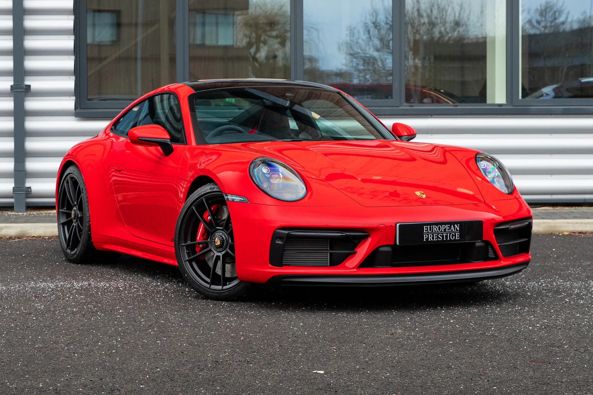

Porsche 911 — легендарный спортивный автомобиль с задним расположением двигателя и идеальной управляемостью.
Инженеры Porsche прекрасно понимали, какой автомобиль они создают. Их целью было сохранить легендарную концепцию заднемоторного спортивного купе и довести её до совершенства. Porsche 911 сочетает компактный 3.0-литровый оппозитный двигатель с двойным турбонаддувом, выдающий около 385 лошадиных сил, и идеальную балансировку шасси. Благодаря высокоточной подвеске и заднему приводу автомобиль разгоняется до 100 км/ч примерно за 4.2 секунды и способен развивать скорость более 290 км/ч. 911 остаётся символом инженерной точности и одним из самых узнаваемых спортивных автомобилей в мире.
© Все права защищены